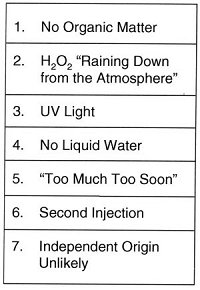

|
1. INTRODUCTION Last year, a paper1 by the senior author concluded that the Labeled Release (LR) Experiment2,3 on the 1976 Viking Mission to Mars had detected living microorganisms in the planet’s surface material. The paper presented evidence against each of the principal objections, listed in Table 1, that had been cited over the years by NASA planetary scientists and their program colleagues who, together, formed a consensus attributing the LR results to putative chemical constituents in the Martian soil. Whether or not the paper cited had any influence, a significant change in NASA’s position has now been announced4 by its Associate Administrator for Science. He stated, "Wherever liquid water and chemical energy are found, there is life. There is no exception." The Viking Gas Exchange Experiment detected5 strong chemical activity in the Martian soil. With the chemical energy criterion thus satisfied, only the lack of liquid water in the surface material sampled by Viking Landers now precludes acceptance of the biological conclusion. The purpose of this paper is to establish the presence of liquid water in the surface material of Mars, and in sufficient quantity to support microorganisms, thereby eliminating all explanations but a biological interpretation of the LR Mars results.
2. BACKGROUND A pre-Mars-landed missions paper6, speculating on the prospects for liquid water, concluded that any water frost deposited on the Martian surface would evaporate before it could liquefy. As the ice warms toward 0° C, it evaporates at an increasing rate. The ice loses heat proportionately to this evaporation rate. The paper postulated that this evaporative heat loss will overcome the solar heat flow at a temperature below 0°C. The paper examines the heat balance of ice at 0° C. Heat fluxes required to maintain an evaporating frost deposit at constant temperature in the Martian atmosphere were calculated and deemed unavailable at the surface of the planet. Thus, it was concluded that the temperature of the frost could not be maintained at 0° C, the melting point of ice, and that the frost would "probably disappear before the temperature reaches the melting point." The paper stated that, at 10 mb Mars atmospheric pressure, a heat flux of 0.76 calories per square centimeter per minute is required to maintain a frost deposit at 0° C. It projected that a frost deposit 10 to 20 µm thick at –10° C would last only several minutes, "probably" not enough time to warm to 0° C to melt, even if the heat were available. Acknowledging that the calculations are based on pure water, the paper proposes that "Liquid water is therefore limited to concentrated solutions of strongly deliquescent salts." The mathematical treatment relies on many assumptions, some doubtful:
These dubious assumptions make it difficult to support the conclusion that the observed water frost can never melt to produce biologically significant amounts of water. A categorical statement of this kind would require detailed modeling of the atmosphere and soil on Mars wherever water frost has occurred. A comprehensive review8of water on Mars contains a variety of the above and related theories. While the general tenor is against the probability of surface liquid water, the possibilities discussed do include some providing liquid water in the soil to depths of several centimeters. Again, however, the liquidity-enhancing effects of salts were not considered. Solutes may lower the melting point of water by more than 10° C, will reduce the rate of sublimation of ice, and will raise the boiling point. If liquid water does form, it will pool in low areas and expose a much lower surface than that of the ice from which it formed. The evaporation rate would be reduced proportional to the reduction of the surface area. As long as the total atmospheric pressure exceeds the triple point, liquid water will not boil, and, if formed, could exist on the surface for a biologically significant time. The twin spacecraft landed on Mars in NASA’s 1976 Viking Mission performed the Labeled Release Life Detection Experiment (LR) at sites 4,000 miles apart. The LR consisted of the application of a 14C-labeled organic medium to samples of surface material, and monitoring the moistened sample for the evolution of radioactive gas as evidence of metabolism by soil microorganisms. Should such a result occur, the control consisted of heating a duplicate sample to "sterilize" it, and repeating the experiment. A significant decrease in gas evolution from the heat-treated sample was grounds for concluding that the first response had been caused by biological agents, not chemicals. The latter would likely survive the heating to produce another strong response. Figure 2 shows the initial test and control data which satisfied the pre-mission criteria for the detection of living microorganisms. In an attempt to strengthen the differentiation between biological and chemical agents, the temperature regimens administered to additional controls were successively reduced to the point where no putative chemical candidate would be inactivated by the modest amount of heat applied. In all, a total of 9 LR test and control runs was made. The characteristics of the soil agent which these findings establish are summarized in Table 2. All comport with biological, not chemical, activity. Beginning immediately after the first Mars LR experiment was completed, a variety of theories was presented attributing the results to chemical or physical agents. Many experiments were performed to that end. While some have produced gas evolution, as of this writing, none has been reported as having succeeded in duplicating the Mars LR test and control data. On the other hand, many experiments with terrestrial microorganisms and soils closely mirrored the Mars results. Figure 3 compares a number of these with the first Mars LR experiment. Nonetheless, the official NASA position, and the view of the majority of interested scientists continues to be that the Viking Mission produced no evidence of life on Mars. The reported9 fossil indicators of microbial life in meteorites generally accepted as of Martian origin, following upon numerous findings of terrestrial microorganisms in environments so extreme they were previously thought inimicable to life, have resurrected the issues of extinct and extant life on Mars.
3. THE CASE FOR LIQUID WATER ON THE SURFACE OF MARS A word is in order about the applicability to liquid water on Mars of the triple point of water and Dalton’s Law of Partial Pressures lest they be applied incorrectly. The 6.1 mb pressure and 0.01° C temperature phase diagram coordinates identifying the triple point were determined for water as a closed, single component system, and in a pure state (that is, no substances other than water are present). On Mars, water exists in an open, multi-component system with atmospheric gases and extensive soil solutes. However, the laws of physics dictate that, when the atmosphere is saturated with water vapor, no net evaporation takes place. Under these conditions, when the temperature is between 0o C and the boiling point, and the total atmospheric pressure is at or above 6.1 mb, any water in the soil will be present in liquid form (Figure 4). Gases in the Martian atmosphere of, say, 10 mb obey Dalton’s Law of Partial Pressures, but they are not ideal gases as Dalton defined them. Dalton’s ideal gas was made of atoms of infinitesimal size and, consequently, they did not interact with each other. Enclosed in a container, they would hit only the walls. The atoms would travel at speeds between 100 and 1,000 m per second. Diffusion rates are very much slower, because the atoms or molecules do interact. Molecules of CO2 are a few angstroms in diameter, and collide with each other in the Martian atmosphere about every 100 nanosec after traveling about 10 µm. Water vapor molecules in the Martian atmosphere collide with other water vapor molecules and with CO2 molecules. Because of this, water vapor slowly diffuses through the Martian atmosphere. As seen in Figure 5, a melting ice cube standing in an unsaturated Martian atmosphere would generate a flux of water vapor radiating outward in all directions. Assuming the entire 10 m m of precipitable water in the form of ice covers one cm2 of surface and that it evaporates in one minute:A 1 cm2 x 10 By Bernouilli’s Law, the atmospheric pressure difference, D p, generated by the evolving gas = 1/2 r V2, where V = velocity in m/s, r = density in kg/m3 and D p = pressure difference in Pascals.D p = 0.5 x 8.035 x 10-3 x 0.02072 = 1.721 x 10-6 Pascals = 1.721 x 10-8 mb. This nearly infinitesimal pressure difference would, nonetheless, produce the slight flux.The flux would fall off with distance from the source according to the 1/r2 law. The overpressure would dissipate with distance from its source according to the 1/r4 law since it is proportional to the square of the velocity. The flux would deplete the CO2 around the cube despite the slow diffusion of CO2 toward the cube. An equilibrium would soon be reached in which the air near the cube would consist of water vapor greatly depleted in CO2. Near the cube, the total atmospheric pressure would be barely above 10 mb, with outward gradients of rapidly declining water vapor pressure and rapidly increasing CO2 pressure summing to 10 mb in accordance with Dalton’s Law. Referring to Figure 5, as the ice warms to 0° C, the vapor pressure above reaches 6.1. During the transition of solid to liquid, the vapor pressure stays at 6.1 mb. As the temperature of the liquid water rises above 0° C, the vapor pressure will rise above 6.1 mb. Should the liquid water reach about 10° C, the vapor pressure would reach 10 mb, the total atmospheric pressure, and, upon any further rise in the temperature of the water, evaporation would become explosive. While there is abundant evidence that large quantities of liquid water existed and flowed on Mars eons ago, water on the surface of Mars has been seen by orbiting spacecraft, landers and rovers only in solid form, as surface frost, snow and polar ice. However, radar data indicate that subsurface permafrost, with possible subsurface liquid lakes, contain the considerable bulk of water remaining on the planet. Mars is generally reported as bone-dry, with the low atmospheric pressure and sub-freezing temperatures cited10 as prohibiting liquid water at the planet’s surface. Water vapor in the Martian atmosphere was measured by the Viking Orbiter Mars Atmospheric Water Detection (MAWD) Experiment11. Observations from periapsis altitude of 1,500 km revealed the global distribution of the water vapor content through the full atmospheric column to range between 10 to 100 precipitable m m. Prospects for liquid surface water seemed very bleak.Viking obtained atmospheric pressure12 and surface temperature data.13 They show that the surface temperatures of large geographical regions of Mars were above 273° K. However, the low average atmospheric pressure measured continuously over the entire Viking Mission never rose above 10 mb. Since the water vapor pressure is thought to be generally only a minute fraction of that, the triple point water vapor pressure to permit liquid water would seem very remote. It is surprising, therefore, that data obtained by the Viking 2 Lander sampling head indicated the presence of liquid water. As the sun rose, the temperature of the sampling head plate resting on the soil increased until pausing at 273° K,14 the unique and identifying temperature of water ice liquefying. This is strong evidence that sufficient ice was in the surface material such that absorption of the heat of fusion by the ice interrupted the rise in temperature.Pathfinder’s meteorological station returned data15 supporting and extending that of Viking with respect to liquid water. Air temperatures ranging up to 21° C were reported at the surface of the planet. Most important, however, was the finding that the air temperature rose sharply as the ground was approached. Soon after landing, the average air temperature measured at 0.65 m above the surface was reported to be 5° C, or more, hotter than that 1.4 m above the ground. No temperature sensors were placed on the surface, but it seems likely that the soil temperature exceeds the overlying air temperature during the warm portion of the cycle, its re-radiation of absorbed heat contributing to increase the air temperature. A short time later, it was stated16 that "Large near-surface temperature gradients of 10 to 15 K are probably a common feature of the Martian daytime boundary layer. Because of low atmospheric densities, the convective heat flux is unable to cool the surface as efficiently as on Earth, where fluxes typically remove 80 to 90% of the net surface radiative flux under convective conditions." Commenting17on this finding, the chief Pathfinder scientist said "It implies there are eddies of warm air bubbling off the surface … All our jaws dropped when we saw that data." This is a newly revealed mechanism for the diurnal concentration and conservation of heat in the soil. As the temperature rises under a saturated surface atmosphere, frost will liquefy. This previously unknown reservoir of available calories may replace those lost through evaporation, allowing the frost to reach 0° C and then to melt. The soil may, thus, develop and retain minute quantities of liquid water for biologically significant periods of time. In addition, as fast as liquid water might appear, it would dissolve solutes abundant in the highly hygroscopic Martian soil. This would delay loss of liquid water through evaporation Together, the Viking Orbiter surface temperature data, the Viking Lander surface temperature, the Viking images of diurnal frost, with even heavier deposits as seen in Figure 1, and the Pathfinder atmospheric data showing rapidly rising temperatures near the surface suggest the following water cycle operating on Mars. The air at all but the surface layer on Mars is too cold to support much humidity. At 45° latitude, the total capacity of the atmosphere is less than 15 precipitable µm.18 Even at the equator, this amount is barely exceeded at dawn. The coldness of the atmosphere above this slim layer of air acts as a sweep, moving any water vapor in the atmospheric column downward toward the surface. Even though convective air may temporarily elevate water vapor above the severe limits imposed by the Martian atmospheric lapse rate, the net flux is downward. As depicted in Figure 6, at night the atmosphere at the surface cools, its water vapor capacity diminishes by two orders of magnitude, reaching 100% humidity. The vapor condenses, then freezes, and, along with any falling ice crystals and upwelling sublimate, deposits on the surface. A very large fraction of the water vapor in the atmospheric column is thus deposited. The ground at this point is very cold, IR irradiation having removed the heat of the day, and retains the fresh, very thin coating of ice. The ground acts as a cold plate, further trapping moisture from the air, thereby establishing a concentration gradient scavenging moisture from the atmosphere. In the morning, illustrated in Figure 7, as the sun rises, its rays strike the translucent frost ice coating. The frozen water is warmed by partial absorption of the sun’s direct rays and by re-emission in the IR of the sun’s rays which passed through the ice and were absorbed by the underlying surface material. Starting at approximately –50° C, each gram of water must receive 50 calories to achieve 0° C, and another 80 calories to melt. As vaporization increases, the warming atmosphere immediately above the surface becomes saturated. As the temperature rises above 0°C and until it exceeds the Mars liquid water envelope seen in Figure 3, the water vapor pressure exceeds the triple point. The water vapor is restricted from rising by the cold air above the vapor-saturated surface layer, which may be only millimeters or centimeters thick. As the sun continues to rise (Figure 8), the ice heats faster than the vapor can rise into the cold air just above the saturated layer. The saturated layer prevents further evaporation, with its attendant cooling. Thus, the heat of insolation and re-irradiation absorbed by the ice supplies the heat of fusion. The result is water moisture released and trapped in the warming surface soil. Any water that does evaporate will remove 540 calories per gram, which must be replaced from the environment. Otherwise, the water will freeze and sublime at a temperature where the absorbed heat and the heat lost by sublimation come into equilibrium until the ice sublimes completely.19 (The ice would sublime at a slower rate than the water would evaporate because the heat of sublimation is higher than the heat of vaporization.) There are, however, mitigating circumstances: 1) the albedo of the surface is likely significantly lower than was presumed in the cited20; 2) solar heat from the nearby bare soil and rock may contribute absorbed heat to the frosted area; and 3) the sublimation rate given may be overstated when the atmosphere is near saturation, and the rate must be zero at saturation. As the day progresses, the events shown in Figure 9 occur. Under increased warmth from the sun, the warm layer ascends, perhaps as high as a meter. The growing volume of warmer air just above the surface then accepts additional water vapor from the warming liquid. Within the liquid water temperature-atmospheric pressure envelope prevailing on Mars, as shown in Figure 4, boiling cannot occur. However, as the temperature of the soil exceeds the limit of that envelope, boiling would occur. This entire diurnal cycle would then repeat the following day. The heat required to warm the frost deposited nightly, melt it, and evaporate the resulting liquid may be calculated:
Heat available from surface material: Assume surface material is at max daily temp ~20° C, Alternatively, the insolation at the top of the Mars atmosphere is 0.827 cal/min21. A portion of the energy is intercepted by dust suspended in the atmosphere. The dust levels vary considerably.22 Opacity was reported to range up to 1.0 at visible wavelengths. Mariner 6 and 7 found the Martian atmosphere to be relatively clear with no dust clouds, with other missions finding up to 40% of the visible insolation reaching the top of the atmosphere never striking the planetary surface. However, many variables in the observing techniques make exact determinations difficult. If one assumes that, on frequent clear days, atmospheric dust obscures no more than 10% of the solar energy incident to the top of the atmosphere, this leaves 0.744 cal/min incident to the surface. For dark rocks and dark soil areas, the albedo is as low as 0.09523, say 0.1. Thus, for those rocks and dark areas at surface angles compensating for the latitude, 0.67 cal/min are absorbed. This is, coincidentally, equal to the amount of heat calculated above for heating, liquefying and evaporating 10 µm of frost. These calculations do not address the relative rates of heat demand and supply to see if the latter may keep up with the former. However, for the frequent times when the atmosphere immediately above the surface is at or near saturation, the demand will be slight or nil. The above mechanism provides for the daily moisturization of surface soil over large areas of Mars, including the Viking Lander sites. The MAWD-determined 10 to 100 m m of precipitable water vapor in the Mars atmospheric column which provided the basis for the above calculations. The rarified atmosphere and low temperatures concentrate most of this water near the planetary surface. If all of the water were driven to the surface nightly, and if the liquid water produced by the above model were retained in the top 1 mm of the soil, perhaps prevented from percolating downward by the frozen ground beneath, this would produce between 1% and 10% moisture by volume. If less water deposits, the resultant moisture percentage is adjusted by that factor. The Viking Lander images of ground frost and snow demonstrate that the percentage deposited is sufficient to be readily visible, which indicates that a substantial fraction of the total water vapor content of the atmosphere must be deposited, or that a substantial amount of vapor must arise from the permafrost, or both. (The underground source, however, seems unlikely to be significant since it would daily be contributed to, and thereafter appear in, the atmospheric vapor content.) It is thus indicated that the diurnal moisture content of the topmost layer of Martian soil lies between a substantial fraction of 1% up to several percent.It is interesting to compare the above amounts of moisture to that found in the top 1 to 2 mm of the Death Valley, California, sand dunes at which depth the LR experiment readily got positive results24, very comparable to those obtained on Mars. Samples taken25 for analysis were reported to contain 0.9% moisture and 5x103 aerobic microorganisms per gram. While the permafrost may not directly contribute significantly to the moisture content of the surface soil, it may play another important role with respect to microorganisms. It was recently reported26 that permafrost conditions provide a constant and stable environment to permit microbial communities to survive millions of years. It was stated that there is direct evidence for adaptive physiological and biochemical processes in microorganisms during the long-term impact of cold. While these findings refer to terrestrial microorganisms, they might also apply to Mars.
4. CONCLUSION Based on Viking and Pathfinder data, and consistent with the principles of thermodynamics relating to the triple point of water, a model has been created for a diurnal water cycle on Mars. The model predicts the diurnal presence of several tenths of a percent to several percent water moisture in the thin, topmost layer of the surface material over large regions of Mars. Images taken by the Viking Lander cameras show diurnal surface water frost, verifying the prediction of the model. Terrestrial experiments in natural environments and in the laboratory have demonstrated that the amount of surface layer water moisture predicted by the model is sufficient to sustain survival and growth of common soil microorganisms. This model, thus, removes the final constraint, as recently cited by NASA, that prevented acceptance of the biological interpretation of the Viking LR Mars data as having detected living microorganisms in the soil of Mars.
5. DISCUSSION The scientific importance of the detection of extant extraterrestrial life requires that the results of the Viking LR data be verified or refuted by return missions to Mars at the earliest possible time. This determination is also required for practical reasons inasmuch as near-term Mars missions are now scheduled, none of which is planned to carry life-detection capability. Present plans call for the return of a Mars soil sample to Earth, perhaps as early as 2003. Based on his conclusion27 last year that the Viking Mars LR data established the presence of living soil microorganisms, the senior author presented a set of recommendations. These have been changed and assimilated, in accordance with the current situation, into the recommendations which follow.
6. RECOMMENDATIONS 1. Modify TEGA Experiment The Surveyor ‘98 Mars mission will carry a Thermal and Evolved Gas Analyzer (TEGA) for the purpose of determining chemical and physical properties of the soil. A modest modification28 of the experiment will permit it to determine whether the active agent Viking found in the soil possesses chiral activity, or chemical handedness. Chiral activity, that is, preference for one handedness of a molecule in the presence of both, is exhibited only by living organisms. Earth life forms produce and utilize virtually only left-handed (L-) amino acids, and right-handed (D-) carbohydrates. A chiral experiment could determine the presence of living organisms, and, possibly, their common or different origin with respect to terrestrial life forms. 2. Modify LR Experiment The Viking LR Experiment contained racemic (equal-handed) mixtures of chiral molecules. Mission constraints prevented inclusion of separate instruments for each handedness. Thus, it could not be determined whether the response obtained was caused by one of both-handed molecules. Using the Viking LR legacy, a modified LR experiment could, first and importantly, verify the original result; and, secondly, unequivocally determine whether such a response were biological or chemical in nature. Present technology would produce an instrument to be much smaller and lighter than the Viking version. 3. Develop New Life Detection Experiments Other life detection experiments, based on current molecular biology techniques, should be developed along with miniaturized instruments to permit their inclusion in the current series of small Mars spacecraft. 4. Develop Soil Water Moisture Experiments Experiments to measure the water moisture content of the Martian soil over the course of the day should be developed and flown. 5. Defer Return of Mars Sample The return to Earth of a sample of Martian surface material should be deferred until the nature of any life present is determined with respect to any possible hazard to terrestrial life forms or environment.
7. ACKNOWLEDGEMENT The authors are grateful to Richard Hoover, Marshall Space Flight Center, for calling to our attention the Viking Lander image shown in Figure 1.
8. REFERENCES 1. Levin, G.V., "The Viking Labeled Release Experiment and Life on Mars," in Instruments, Methods, and Missions for the Investigation of Extraterrestrial Microorganisms, Proc. Internat. Soc. for Opt. Engnrg., Proc. Series, 3111, 146-161, 1997. 2. Levin, G.V., "Detection of Metabolically Produced Labeled Gas: The Viking Mars Lander," Icarus, 16, 153-166, 1972. 3. Levin, G.V. and P.A. Straat, "Labeled Release – An Experiment in Radiorespirometry," Origins of Life, 7, 293-311, 1976. 4. Huntress, Wessly, Jr., quoted in The San Diego Union-Tribune, p-A1, Feb. 19, 1998. 5. Oyama, V.I. and B.J. Berdahl, "The Viking Gas Exchange Experiment Results from Chryse and Utopia Surface Samples," J. Geophys. Res., 82:28, 4669-4676, 1977. 6. Ingersoll, A.P., "Mars: Occurrence of Liquid Water," Science, 168:972-973, 1970. 7. Zurek, R.W., "Comparative Aspects of the Climate of Mars: An Introduction to the Current Atmosphere," in Mars, pp. 799-817, Kieffer, H.H. et al., eds., U. AZ Press, Tuscon & London, 1992. 8. Jakowsky, B.M. and R.M. Haberle, "The Seasonal Behavior of Water on Mars," Op. Cit. 7, pp. 969-1016. 9. McKay, D.S. et al., "Search for Past Life on Mars: Possible Relic Biogenic Activity in Martian Meteorite ALH84001," Science, 273, 924-930, 1996. 10. Op. Cit. 6. 11. Farmer, C.B. et al., "Mars: Water Vapor Observations from the Viking Orbiters," J. Geophys. Res., 82:28, 4225-4248, 1977. 12. Carr, M.H., Water on Mars, Oxford University Press, New York, 1996. 13. Kieffer, H.H. et al., "Thermal and Albedo Mapping of Mars During the Viking Primary Mission," J. Geophys. Res., 82, 4249-4291, 1977. 14. Moore, H.J. et al., "Surface Materials of the Viking Landing Sites," J. Geophys. Res., 82:28, 4497-4523, 1977. 15. Mars Pathfinder Mission Status, Jet Propulsion Laboratory, NASA, daily website reports, July 9 – Aug. 1, 1997. 16. Schofield, J.T. et al., "The Mars Pathfinder Atmospheric Structure Investigation/Meteorology (ASI/MET) Experiment," Science, 28, 1752-1758, 1997. 17. Golombek, M., quoted by Kathy Sawyer in "Robots Report Back Spectacular Skies," The Washington Post, Aug. 3, 1997, p. A01. 18. Barth, C.A. et al., "Aeronomy of the Current Martian Atmosphere," Op. Cit. 7, 1054-1089. 19. Op. Cit. 6. 20. Op. Cit. 3. 21. Chem. Rubber Handbook, p. F165, Weast, R., ed., 54th ed., Cleveland, 1973-1974. 22. Kahn, R.A. et al. , "The Martian Dust Cycle," in Mars, pp. 1017-1053, Kieffer, H.H. et al, eds., U. AZ Press, Tuscon & London, 1992. 23. Op. Cit 13. 24. Levin, G.V. and A.H. Heim, "Gulliver and Diogenes–Exobiological Antitheses," (COSPAR), in Life Sciences and Space Research III, 105-119, M. Florkin, ed., North Holland Pub. Co., 1965. 25. Taken, and analyzed by R. Cameron, soil scientist, Jet Propulsion Laboratory, NASA. 26. Vorobyvo E. et al., "The Deep Cold Biosphere: Facts and Hypothesis," FEMS Microbiol. Revs., 20, 277-290, 1997. 27. Op. cit. 1. 28. Levin, G.V. letter proposal to W. Boynton, TEGA Experimenter, U. AZ, Jan. 19, 1996.
| ||
TABLES AND FIGURES
TABLE 1.

TABLE 2.
FIGURE 1.
FIGURE 2.
FIGURE 3.

FIGURE 4.
FIGURE 5.
FIGURE 6.
FIGURE 7.
FIGURE 8.
FIGURE 9.